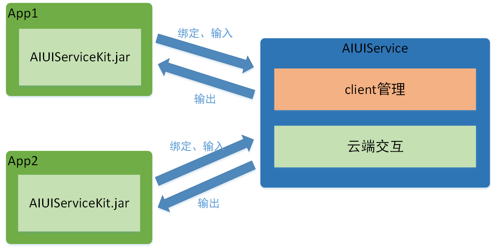
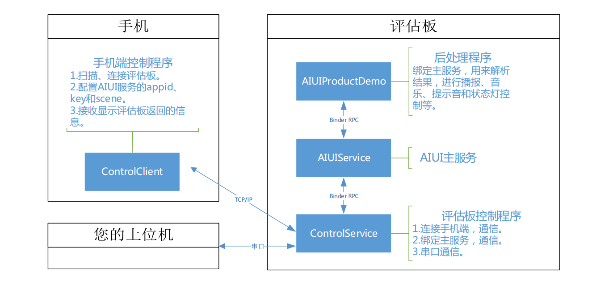

3.1 内部关系¶
AIUI模块（评估板中间的核心板即是AIUI模块）运行的是Android系统，其中最主要的Apk是AIUIService，以Android Service服务的形式，通过SDK形式向其他App提供服务。
AIUI的Android SDK(AIUIServiceKit)由第三方app集成，通过Binder的IPC机制与AIUI Service绑定，调用其提供的功能。
回头看下评估板上AIUIService，ControlService，AIUIProductDemo的关系图：
ControlService和AIUIProductDemo都集成了AIUIServiceKit SDK，接收AIUI抛出的结果，不过对结果的处理不同：
- AIUIProductDemo将结果进行解析播报
- ControlService将结果通过TCP传到手机客户端，通过串口将结果发送到上位机。
AIUIService允许多个应用集成AIUIServiceKit，同时绑定，同时接受结果，如同AIUIProductDemo和ControlService可以同时运行在AIUI模块上一样。
任何应用只要集成AIUIServiceKit，运行在AIUI模块上，都可以接收到AIUIService抛出的结果，做自己的处理。